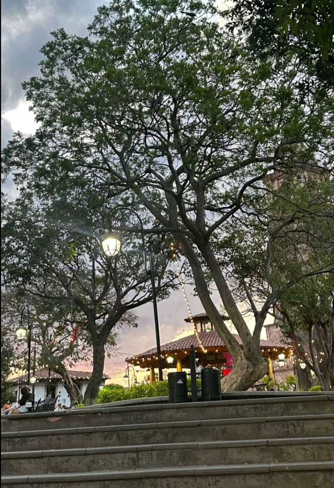
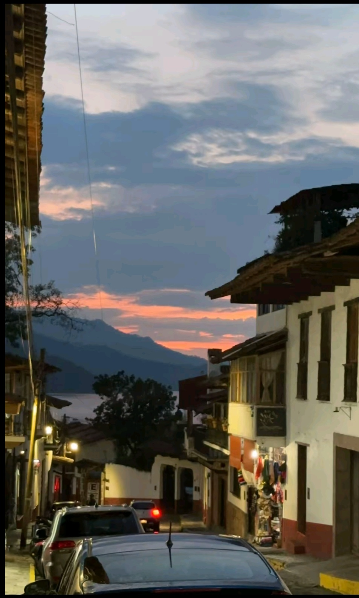

BELLEZA NATURAL
Descubriendo la historia, cultura y belleza...

El embarcadero
Es el Embarcadero Municipal, en la presa Miguel Alemán (lago de Valle de Bravo). El edificio flotante con el letrero "Los Pericos" es un restaurante sobre el agua, de los más conocidos del lugar."
Las lanchas con toldo son las que ofrecen paseos por la presa. Suelen ir a puntos como la cascada Velo de Novia o a zonas con vista a las casas del lago. Al fondo se ven los cerros boscosos que rodean la presa. La zona también es famosa por la vela, el kayak y el parapente.
La presa también es de las mejores de México para la vela, el windsurf y el kayak. Si buscas algo más aventurero, el parapente despega de La Peña, un mirador con vista a todo el lago. Lo mejor es ir por la mañana o a media tarde, con sombrero y bloqueador.

El jardin
Se ve el kiosco con techo de teja y luces cálidas. Los árboles, probablemente jacarandas, dan sombra a la plaza.
A la derecha asoma la torre de la parroquia, que está frente a la plaza. Es el punto de reunión del pueblo: ahí hay música, antojitos y paseos, sobre todo en las tardes y los fines de semana.
La plaza principal es el corazón del pueblo. Bajo la sombra de árboles grandes se encuentra el kiosco con techo de teja, decorado con guirnaldas de luces cálidas que lo hacen brillar al anochecer. Frente a la plaza está la parroquia de San Francisco de Asís, y alrededor hay cafés y restaurantes.
Es el punto de reunión de familias y visitantes, con música, antojitos y helados, sobre todo por las tardes y los fines de semana. Es un buen lugar para sentarse a descansar y ver caer la tarde.

Calle empedrada al atardecer
Muestra la arquitectura típica del pueblo: muros blancos con zócalo rojo, techos de teja y balcones de madera. Por eso es Pueblo Mágico.
Al fondo, entre las casas, se asoma la presa con las montañas, una vista muy característica de sus calles cuesta abajo. A la derecha hay una tienda de artesanías con textiles y sarapes.
Las calles del centro conservan la arquitectura típica del pueblo: muros blancos con zócalo rojo, techos de teja y balcones de madera. Por esa imagen cuidada, Valle de Bravo es Pueblo Mágico desde 2005. Al caer la tarde se encienden los faroles y el cielo se pinta de naranja y rosa.
Al final de muchas calles, cuesta abajo, se asoma la presa con las montañas al fondo. En el camino hay tiendas de artesanías con textiles, sarapes y recuerdos hechos a mano. Usa calzado cómodo, porque hay empedrado y pendientes.
Gastronomia Tesoros por descubrir